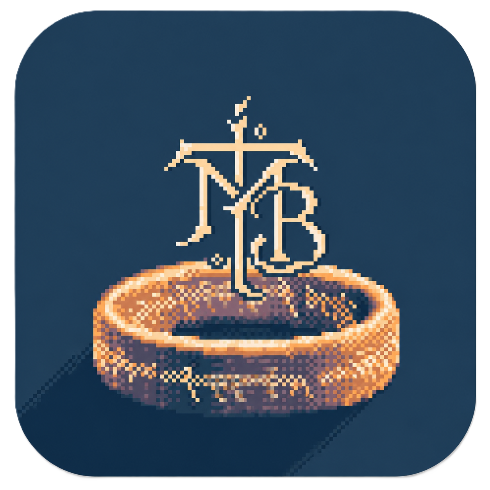

Sobre nós
Somos uma comunidade apaixonada por Tolkien e Minecraft. Queremos oferecer a oportunidade para pessoas que jogam Minecraft Bedrock explorarem a Terra Média no Minecraft! Junte-se a nossa sociedade do discord!
Entrar no Discord


Somos uma comunidade apaixonada por Tolkien e Minecraft. Queremos oferecer a oportunidade para pessoas que jogam Minecraft Bedrock explorarem a Terra Média no Minecraft! Junte-se a nossa sociedade do discord!
Entrar no Discord